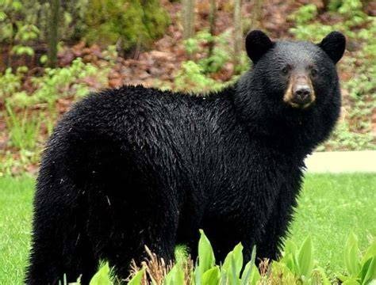
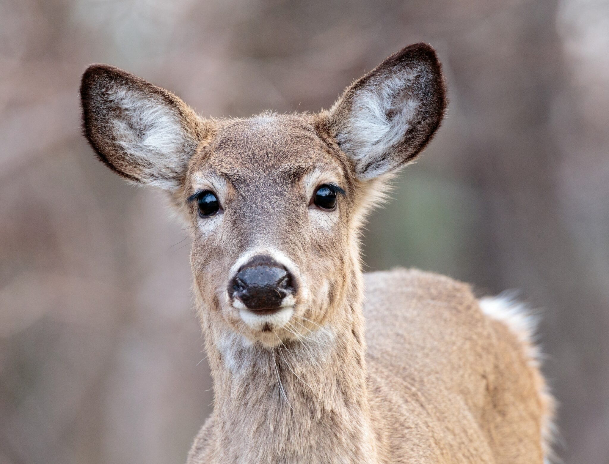
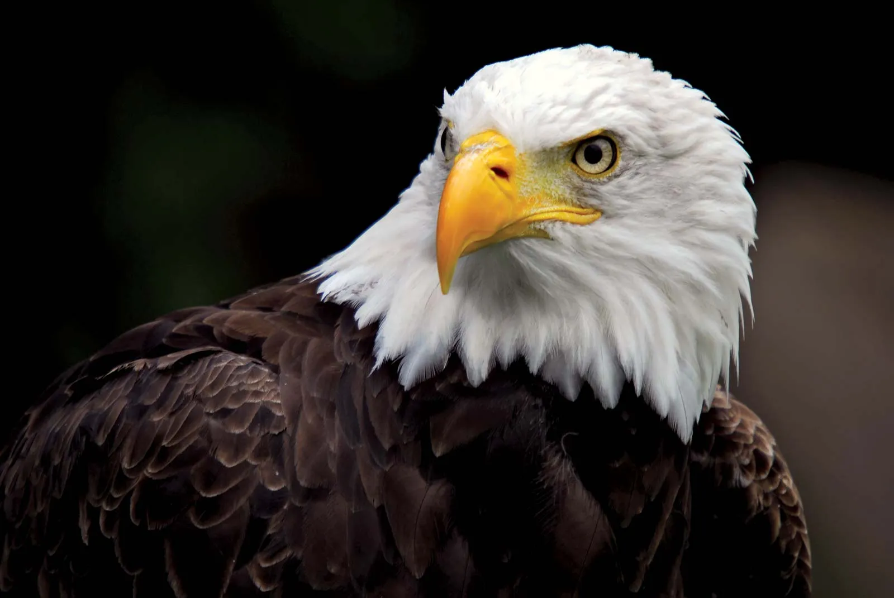
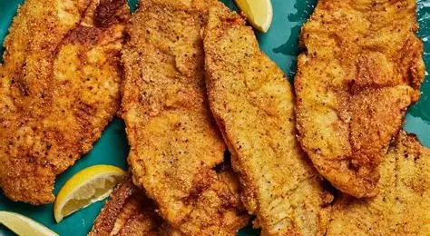
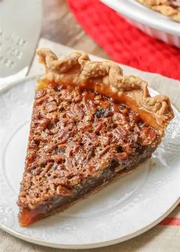
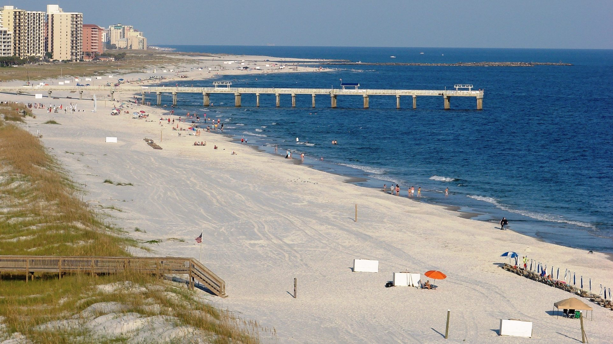
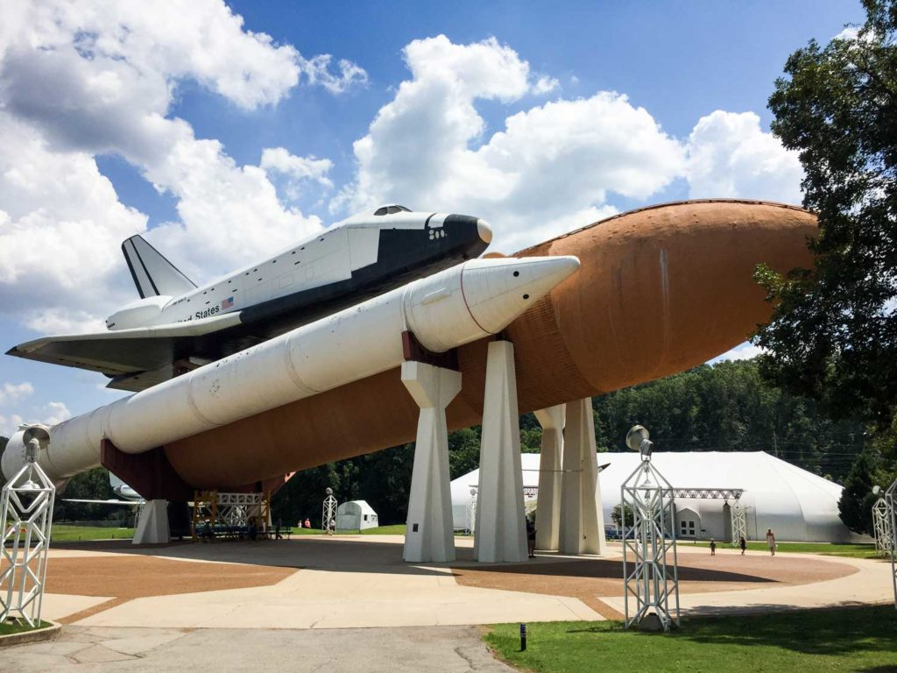

Welcome to Alabama
The Heart of Dixie
USA
Alabama is a state in the southeastern region of the United States.
State Data
- Capital: Montgomery
- Largest City: Birmingham
- Population: ~5 million
- Nickname: Heart of Dixie
Animals
Famous animals of Alabama include the American Black Bear, White-tailed Deer, and Bald Eagle.



Food
Popular Alabama dishes: Fried Catfish, Pecan Pie, and Sweet Tea.


Travel Destinations
- USS Alabama Battleship Memorial Park
- Gulf Shores Beaches

- Little River Canyon National Preserve
- Huntsville Space & Rocket Center

Representative
Alabama has several representatives in the U.S. Congress. For example, Senator Katie Britt and Senator Tommy
Tuberville.
Songs about Alabama
- "Sweet Home Alabama" – Lynyrd Skynyrd
- "Alabama Song" – The Doors
- "Stars Fell on Alabama" – Billie Holiday
Famous People from Alabama
Helen Keller – Author & Activist
Hank Williams – Country Singer
Rosa Parks – Civil Rights Icon